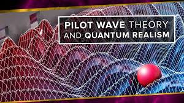
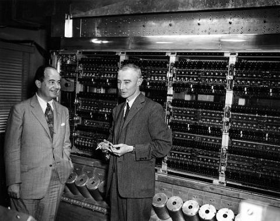
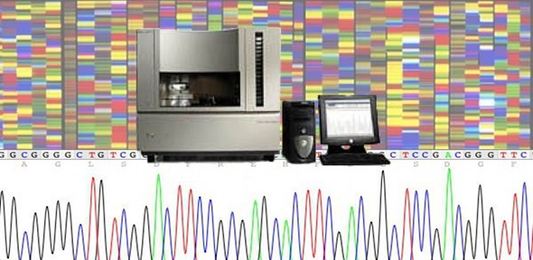
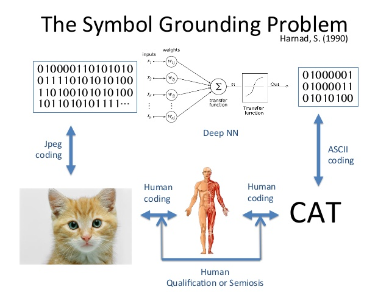
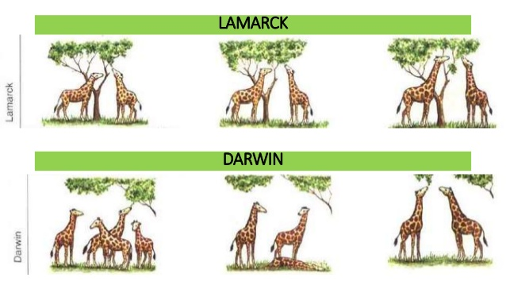
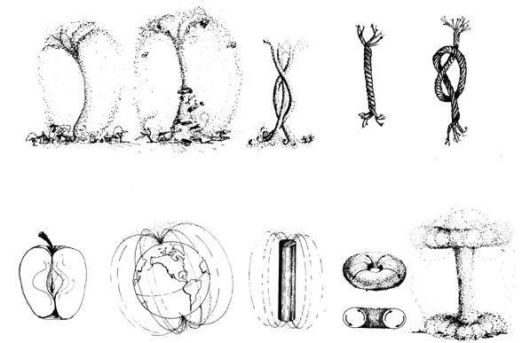

Why Science Matters¶
25. Physics¶
KEY QUESTIONS
Everybody is told in school about mass, space, time and electric charge. But what are these things? How do we know they are real?
Why is there no coherent uncontested theory of everything which unites relativity with quantum mechanics
WHY DOES THIS MATTER?
There was a time when science believed that the natural world made itself available to calculation and prediction. Scientific observation produced objectivity.[@wiener_human_1988] 
Scientific facts were indisputable, and the scientific practices of physics became the blueprint for inquiry into society, economics, the arts and education.
Einstein’s questions concerned the perception of scientists: perception was relative to light, space and time
In Quantum Mechanics observation was not only relative to the context in which it acts, but tied-up in the very structure of the natural world: observation changes the world.
Consequently, modern physics has become a process of accurately measuring uncertainties expressed as probabilities. This is what physicists are talking about when they talk about a ‘wave function’.
26. Biology¶
KEY QUESTIONS
Which came first, the cell or DNA?
How does a molecule (DNA) come to be about another molecule?
What is the relationship between cells and atoms?
WHY DOES THIS MATTER?
Life is cellular. But what is a cell? In school we learn that biology is a very different subject from physics. Biology concerns living processes, feedback, homeostasis, and so on. Physics concerns eternal mechanical laws. We accept that biological systems are made of atoms and molecules, but the connection between the processes of the mechanisms of atoms and molecules and the living processes of a growing embryo are shrouded in mystery.

What would science look like if we saw biology and physics as one? The impact of Quantum mechanics on biological systems is exciting a lot of interest at the moment, as biological phenomena such as sensation are being successfully explained by Quantum phenomena.
DNA is a molecule which, biology tells us, is about other molecules. That means the molecules in DNA refer to the molecules in proteins which are expressed by it. How can a molecule be about another molecule? Where did that begin?
In both biology and physics there are a large number of basic things which we do not know. What happens at the quantum level? What is mass, time or space? Everyone talks about ‘energy’ - but what’s that? Why is it that everything in nature appears to be meshed together - planets, plants, stars, man, consciousness?
Communication and information appear to be fundamental things at the subatomic level. Yet the real challenge here is that this subatomic level gives rise to our own biology and our own consciousness which in turn is able to think about its fundamental origins!
27. Deciding to Kill the Planet¶
KEY QUESTIONS
Are ecological problems the result of human failure to make good decisions?
How can humans make better decisions?
Why are humans so short-sighted in their development of new technologies?
WHY DOES THIS MATTER?
In the early 1970s, Cohen and March developed a model of organisational decision-making called the ‘Garbage can model of organisational choice’ [@cohen_garbage_1972]. This model described how humans rarely solve complex problems, but instead try to turn complex problems into easy problems by deciding to implement some technology which was already in existence. Cohen and March highlighted that this was often a cause of greater complexity and unmanageability.
When humans make decisions, either at an individual level, or at the level of corporations, governing bodies, ministerial agencies, political conferences, international agreements or pressure groups, brains come together to coordinate a collective course of action suitable for the group.
Damage persists upheld by webs of institutions, including universities, each seeking to uphold their identity and mission, including students who qualify from universities.
Decisions are made within constraints. There are the immediate constraints which include the available information about the situation, the skills and capabilities of individuals, psychology, technological resources, and communication channels for coordinating action.
More subtle constraints include power relations within the decision-making group and the broader political background of decision-making.
Decisions are made in an inter-subjective context, even when they are the decisions by an individual for their own needs. For example, students faced with choosing a subject or an institution must deal with multiple constraints, amongst which include information about judgements by others as to their suitability to a particular course, information about career prospects, information about alternatives, information about costs, as well as self-evaluation of desires, uncertainties, commitment and motivation.
28. Innovation and Scientific Advance¶
KEY QUESTIONS
Does innovation increase or decrease the complexity and uncertainty in society?
What is the relationship between human innovation and the ecosystem?
In what ways does one innovation lead to another?
WHY DOES THIS MATTER?
On one level, incremental improvement of technology works: today’s cars are far better than the cars of the 1950s, aircraft rarely crash, and medical procedures which would have once been highly dangerous are now routine and safe. Technology evolves: it becomes more efficient, safer and cheaper.
However, developments in equity, freedom, social welfare, education and the prevention of conflict have not been so spectacular.
The technological gain of increased efficiency produce systematic problems elsewhere: cars turns the ground to tarmac, pollutes the air with fumes and noise, causes congestion, results in the travelling of increasing distances and creates a pathological obsession with speed.
A previous generation of fast cars creates new uncertainty which leads to the next generation of fast cars. The search for new medical procedures and drugs is a reaction to the uncertainty produced by the previous generation of drugs and procedures. The creation of new ways of measuring the performance of social systems a reaction to the failure of existing ways of measuring social systems.

29. Computers and Science¶
KEY QUESTIONS
Could scientists be replaced by computers?
What areas of scientific investigation do not involve computers?
Since computers manipulate information, what is information and how does it relate to science?
WHY DOES THIS MATTER?
After the advances in physics in the 20^th^ century, computers have become essential tools for calculating probabilities rather than definite objective observations.
By the 1940s, computers were being used to calculate the solutions to the statistical equations of Boltzmann and Gibbs: theoretical development could be accelerated with mechanical aids to computation.
In the years to the present day, the computer has transformed science to the point of dominating it. The sophistication of statistical analysis has been exploited in crunching ever-vaster amounts of data (such as the human genome) producing new patterns and descriptions which reveal new insights.
Computer-generated models appear to imitate nature displaying predictive power in their behaviour without any underlying hypothesis, and results of search routines upon the vast database of resources on the web can easily create the impression that the world is the internet.
This has led to an instrumentalisation of scientific inquiry. Advances in machine learning, off-the-shelf software for crunching social science data, modelling tools from engineering to biology create a scientific environment where inability to control the available software is a greater hindrance to professional success than the inability to think critically about what is being experienced.

30. DNA and Information¶
KEY QUESTIONS
If DNA contains information, what is this information the same as information in a computer?
Do enzymes and proteins also contain information? How does this information relate to the information in DNA?
How do the cells at the end of the baby’s finger know they are at the end of the finger? Does DNA tell them that?
WHY DOES THIS MATTER?
Nobody knows what information is: there is no coherent definition which unites information in DNA with information in the computer, or information in physics.
Yet the sequencing of information in DNA and genetics is now a huge industry. Most of this work is dominated by large-scale computer-driven research. There are worries that this focus on computer-driven research will drive out the space for thinking or rethinking the way in which life works. In a recent article, Amos argues that the computer-dominated ‘big science’ is something we should all worry about because:
“genome sequencing offers little science training because most of the work is done by machines and technicians … it is the antithesis of good science, being largely hypothesis-free and involving little experimental design. Why are we placing our few remaining publicly funded eggs into proportionately fewer and fewer baskets?”[@noauthor_big_2013]
Utopian visions for the future of science envisage the ever-increasing power of machine learning and Big data producing answers to fundamental scientific and social problems. On closer inspection, the results of such massive computation, such as the analysis of genetic samples, or the analysis of human behaviour on social media, does little more than amplify the work of thousands of humans were they to endure the boredom of sitting around counting things.

31. Cellular Communication and Human Communication¶
KEY QUESTIONS:
Is there a relationship between the way cells talk to each other and the way we talk to each other
What is the relationship between cellular communication and physics?
What is the relationship between the cell and consciousness?
WHY DOES THIS MATTER?
Cells communicate through a process whereby proteins are produced by DNA within the cell, and these proteins form receptors on the surface of the cell which connects to proteins in the environment of the cell, produced by other cells.
Cells organise themselves according to a balance between their internal organisation and their external environment. It is a process referred to in biology as ‘transduction’
Drawn abstractly, a cell is a boundary which maintains itself through the balancing of communications within the boundary and communications outside the boundary

Humans communicate similarly by organising themselves according the balance between the internal (psychological) environment and the external (social) environment.
If a cell communicates to maintain its boundary, do humans communicate to maintain their identity?
The extent to which human communication is an identity-preserving activity can be inspected by considering those things which most people do not want communicated (for example, secrets, things which reveal what we really think, but do not want to be known, etc)
32. Origin of Language - The ‘Symbol Grounding Problem’¶
KEY QUESTIONS
How can something as complex as human language emerge from something simple?
What hope is there for Artificial Intelligence if the complexity of language cannot be reproduced or explained?
When we say human language is ‘complex’, what do we mean?
WHY DOES THIS MATTER?
In the theory of information, the symbol grounding problem refers to the inability to account for the emergence of signs and tokens (words) with referents from basic principles without recourse to apriori distinctions.
The description of abstract mechanisms which show how structures of data can emerge and form the basis of very simple languages has been elusive, although there have been some interesting attempts by Holland (see his ‘echo’ model) and Floridi. 
The symbol grounding problem is fundamentally a problem within the broader topic of morphogenesis, and indeed, the emergence of discrete symbols from basic principles is not dissimilar from the emergence of discrete forms from basic principles. They might well be one and the same!
Complexity itself is not well-understood. Human language has lots of variety - many words for many things. But human language also exhibits rich patterns, which appear to be overlaid over one another - like poetry.
33. Human Emotion and Behaviour¶
KEY QUESTIONS:
What is an emotion? How does it relate to a thought?
Why do certain things like music, football and grief give rise to such strong emotions?
Will machines ever experience emotions?
WHY DOES THIS MATTER?
Emotions on listening to a piece of music, or emotions in watching a movie, or grieving after the death of a loved one are powerful whole-body sensations.
Emotions do not appear to be merely in the brain.
There appear to be connections between the waves of emotion that moves through a person on hearing a music, grieving for the death of a loved one, gazing into a lover’s eyes, cheering at a football match, and so on.
Each effect, as a change to the state of a person, will have a consequent experience associated with it, and each state will therefore tend to move to another state. In moments of intense emotional experience, like bursting into tears, the physical effects of this rushing through us have real physical side-effects.
Phenomena like music are very important in understanding emotion. Recent research on ‘communicative musicality’ is examining the emotional and musical relationships between mothers and babies, for example [@malloch_communicative_2010]
In listening to music, emotion appears to be related to the problem of expectation[@huron_sweet_2008]. This is to say my expectations are normatively constructed, then the degree to which they might deviate from normal conditions may be an index of emotion.

34. Ecology and Evolution¶
KEY QUESTIONS:
Where have evolutionary processes actually been observed?
What is the difference between Darwinian evolution and creationism?
Do animals inherit the habits of their parents in their genes?
WHY DOES THIS MATTER?
Bateson argues that “today it is quite obvious that [the organism] is not the unit of survival in the freal biological world. The unit of survival is organism plus environment. We are learning by bitter experience that the organism which destroys its environment destroys itself.”
If the unit of survival of an organism is ‘organism + environment’, how are we to understand the environment?
Human development, if it is done in ignorance of the environment - whether it is ecological, political, economic, etc, is going to lead to disaster.
Bateson argues that “the unit of evolutionary survival turns out to be identical with the unit of mind.”
“Ecology, in the widest sense, turns out to be the study of the interaction and survival of ideas and programs (i.e., differences, complexes of differences, etc.) in circuits.”
If we make the error of taking the wrong unit “you end up with the species versus the other species around it or versus the environment in which it operates. Man against nature. You end up, in fact, with Kaneohe Bay polluted, Lake Erie a slimy green mess, and “Let’s build bigger atom bombs to kill off the next-door neighbors.”[@bateson_steps_1987]
35. Inheritance: Lamarck and Darwin¶
KEY QUESTIONS
How did the elephant get its trunk and the giraffe get its neck?
Do we inherit the habits of our ancestors through our genes?
Is the ‘survival of the fittest’ the mechanism whereby nature evolves?
WHY DOES THIS MATTER?
Darwin has affected us hugely well outside the realm of biology. From evolutionary economics to Marxist theory, anthropology, physics and genetics, each has been touched by the Darwinian mindset.
Bateson argues that Lamarck’s basic idea of the ‘inheritance of acquired characteristics’, whilst being on the surface wrong, was the first to consider the question of ‘mind’ from first principles, using ‘habit’ as one of his axioms. Mind was emergent from habit [@bateson_steps_1987] 
Bateson further argues that Darwin’s mechanism, for all its genius, took “mind” out of the equation in the question of survival and replaced it with a process of natural selection.
Recent biological work suggests that Lamarck may have been at least partly right: for example, inheritance of predisposition to asthma correlating with the grandparents’ smoking. Cellular mechanisms of adaptation may be behind surprising patterns of inheritance which go beyond natural selection.
36. Information¶
KEY QUESTIONS:
What is information?
What is the relationship between information and meaning?
What is it to be ‘in-formed’?
WHY DOES THIS MATTER?
One of the biggest arguments in science today is about the nature of information.
This course is made up of information: it is the background of education. Formal education systems enlist mechanisms for codifying the knowledge and skills of individuals into information.
There is information on the computer screen that you might be staring at reading this. Information is analysed, and the analysis produces more information.
Biologists analyse the information in DNA, and physicists look for the information in Black Holes. 
Information has a measurement developed by Claude Shannon, without whose equations, the internet would not work. In Shannon’s work, Information is equivalent to ‘uncertainty’.
Information is used to make decisions. We are told with better information, we make better decisions. More and more effort is put into generating more and more information.
If we don’t understand information, what do we mean by meaning?
37. Paradigm Shifts and Analysis¶
KEY QUESTIONS
How do we know we do research right?
What happens when a new discovery turns everything we know upside-down (for example, Copernicus or Einstein)?
WHY DOES THIS MATTER?
Scientific history is full of stories where science was turned upside down. Thomas Kuhn calls these moments a ‘paradigm shift’ [@kuhn_structure_1996].
Such moments are the result of an analytical approach to science, where fundamental generating mechanisms for the world being the way it is are reconsidered from the bottom up.

Most research in almost all fields in universities is not analytic like this, and analytic work is often difficult to get published.
Most research work is instead synthetic: an approach to research which gathers evidence from a variety of empirical situations and attempts to fit an explanatory framework over the perceived phenomena.
Paul Feyerabend argued that the adherence to ways of researching and theories of science which were obviously not right had to do with irrational human processes of defending egos and reputations of scientists and the status of institutions[@feyerabend_against_2010]. He argued that no theory of science should exclude these factors, and that only by acknowledging it would a deeper awareness of the social process of science be possible.
38. Cosmological Thinking¶
KEY QUESTIONS:
Should we think about the details of particular phenomena, or should we think about how the whole universe gives rise to particular phenomena?
How can a cosmology be verified?
WHY DOES THIS MATTER?
The result of analytical thinking is a deeper cosmology about why the universe is the way it is
Such cosmologies characterise the work of scientific revolutionaries like Newton, Galileo, Einstein. In each case, they radically rethink the story of the universe.
In order to comprehend what underlying mechanisms are, one has to see beyond what is immediately perceived.
Synthetic approaches to science, rather than analytical approaches, dominate most of what goes by the name of ‘research’ in universities: in physics, a unified theory has been the goal for many generations of physicists who have attempted to unify quantum mechanics with relativity and Newtonian mechanics: so far the approach has failed. In biology, synthesis leads to the variety of specialised theories of epigenesis and genetics.
As with physics, nothing coherent has yet emerged, and indeed there is no explanation for the ways in which cells organise to produce hearts, brains and fingers. In medicine, synthetic methods gather evidence of ‘markers’ for disease from genetics, neurology, endocrinology, and so on, and then seeks to explain disease through the presence of markers.
It should not therefore surprise us to know that research efforts into learning and education (of which biological, physical and physiological theories are a subset) lack coherence and explanatory power.